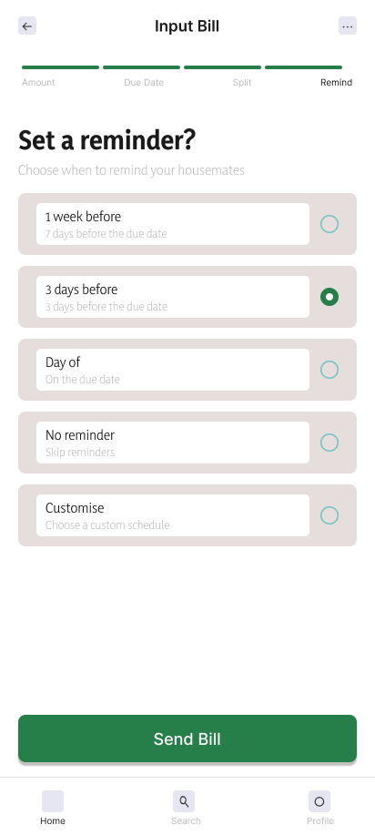

HouseMate Bill Tracker
BillSmart is a concept app designed to simplify splitting shared household bills.

The problem
BillSmart is a concept app for splitting shared household bills and automating payment reminders — designed to remove the social awkwardness of chasing housemates for money.
This case study focuses on one core flow: inputting a bill and automating reminders, seen through the lens of Sarah, a user who wants the app to do the "nagging" for her.
Design a bill-splitting flow that removes the social friction of chasing housemates for payment.
Competitive research, persona definition, user journey mapping, and UX design.
Core flow: inputting a bill and setting up automated reminders.
Competitive audit
I ran a competitive audit of Tricount, Splitwise, Settle Up, and Groupie (Tikkie). All four are polished and reputable — none are low quality — but they differ on positioning: Tricount for roommates and trip-splitting, Splitwise as the established default, Settle Up for users wanting more customisation.
Key weaknesses across competitors
Tricount lacks payment integration and instant settlements. Splitwise has monetisation creep and an increasingly cluttered UI. Settle Up lacks polish and item-level splitting.
No payment integration or instant settlement — users still have to chase manually.
Monetisation creep and outdated UI erode trust in an otherwise dominant product.
Lacks polish and item-level splitting; feels built for accountants, not housemates.
The critical gap
None of the audited apps had strong native reminder systems, and none were built for cohabitation specifically — they're trip-splitting tools with household features bolted on as an afterthought.
Personas & problem statement
From the research, I defined four personas representing different money personalities within a shared house.
Organised, anxious, hates confrontation. Wants bills handled without having to ask.
Freelancer with inconsistent income. Wants a simple "what do I owe" view.
Spends first, needs payday-timed nudges to stay on top of shared costs.
New to shared housing. Wants tech to bridge unspoken social norms around money.
Sarah's problem statement
This case study focuses on Sarah: a busy, organised professional who needs a clear, unobtrusive way to get bills paid and ensure everyone contributes equally — because she doesn't like confrontation or negotiating over household expenses.
Product goal
Remind some users to budget, and reassure others the household's finances are on track, measured through app usage, reminders set, and whether the house stays on top of shared costs.
Finding the direction
The research gap — no competitor treats reminders as a core feature — shaped the direction entirely: rather than a splitting tool with reminders bolted on, BillSmart makes automated, non-confrontational reminders the centre of the experience.
For Sarah, this meant designing a flow where she could set expectations once (the bill, the split, the reminder schedule) and let the app take over the follow-up — rather than personally chasing anyone.
Sarah's user journey
Mapping the flow through Sarah's eyes: she recognises a need to track household spending, researches and downloads an app, registers via Google sign-in, and invites housemates via a shareable WhatsApp link.
She then inputs a bill and splits it — setting reminder dates at the same time, in the same flow. The app automatically nudges housemates who haven't paid or haven't logged an upcoming bill.
Key screens from the bill input and reminder setup flow.
Key decision: reminders come from the app, not from Sarah
The central design decision was framing reminders as coming from the app rather than from any individual housemate. Sarah sets it up once, then steps back — the app does the nagging, removing the social friction entirely.
Decisions & trade-offs
This was a design exercise without formal usability testing — so rather than reported results, here are the key decisions and trade-offs made along the way.
Chosen over in-app invites to reduce friction, directly addressing Tricount's weakness of requiring notification sign-ups.
Defaulted to setting reminders during bill input rather than as a separate step, reducing the chance they're skipped.
How nudges should be worded so they don't feel like nagging from the app either — tone matters as much as automation.
Results & next steps
This flow addresses Sarah's need directly — but the other personas point to a substantial amount of further work.
Needs a simpler "what do I owe" view designed around irregular income.
Needs nudges timed to payday, not to bill due dates.
Needs the app to make unspoken house norms around money explicit.
Next steps
Prototype flows for Maya, Marcus, and Ray, then test reminder tone and timing with real users — to see whether automation actually reduces the "nag" feeling, or just relocates it.